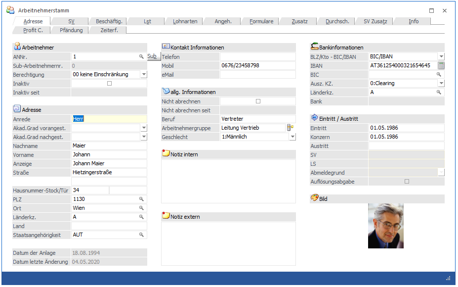
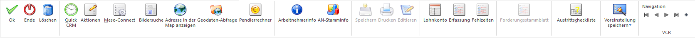
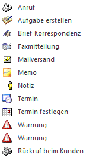
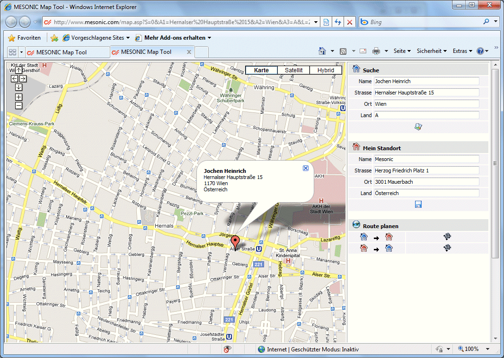
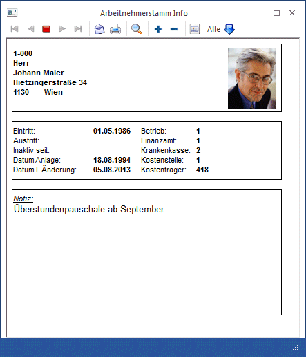

Der Arbeitnehmerstamm ist die Ausgangsbasis für die Lohnverrechnung. Hier werden alle Informationen zum Arbeitnehmer gespeichert. Diese Daten werden für die verschiedensten Arbeitsbereiche verwendet.
Die Arbeitnehmerstammdaten werden über den Menüpunkt
1 Stammdaten
1 Arbeitnehmer
1 Arbeitnehmerstamm
oder Schnellaufruf
1 STRG + A
aufgerufen.
Der Arbeitnehmerstamm gliedert sich in mehrere Rubriken, wobei für jede Rubrik ein eigenes Register vorhanden ist.

Im ersten Register "Adresse" werden alle persönlichen Daten des Arbeitnehmers erfasst:
Arbeitnehmer
Ø ANNr.
Die Arbeitnehmernummer ist die eindeutige Zuordnung eines Arbeitnehmers. Mit dieser Arbeitnehmernummer wird der AN auch zu gewissen Aktionen (Abrechnung, Erfassung, Auswertung) aufgerufen.
Die Arbeitnehmernummer ist 20stellig, alphanumerisch. Bei der Neuanlage von AN muss darauf geachtet werden, dass die meisten Programmbereiche die AN-Nummer als Sortierkriterium verwenden:
Beispiel zur Sortierung:
|
numerisch |
alphanumerisch |
|
1 |
1 |
|
2 |
10 |
|
3 |
11 |
|
9 |
19 |
|
10 |
2 |
|
11 |
3 |
|
19 |
9 |
Soll eine numerisch-ähnliche Sortierung erfolgen, so müssen "Vorlaufnullen" verwendet werden - es wird dann statt der Nummer 1 die Nummer 0001 verwendet.
Wie die AN-Nummer eingegeben werden kann, dazu gibt es mehrere Möglichkeiten. Details dazu entnehmen Sie bitte dem Kapitel Aufruf einer AN-Nummer.
Ø SUB
Durch Anklicken des SUB-Buttons wird ein Fenster geöffnet, in dem alle bereits angelegten SUB-Arbeitnehmer angezeigt werden. Aus der Tabelle kann der AN ausgewählt werden, der bearbeitet werden soll.
Ø Berechtigung
Für jeden Arbeitnehmer kann ein Berechtigungsprofil vergeben werden. Wenn der Anwender einen Arbeitnehmer aufruft, wird geprüft, ob der Anwender einer Benutzergruppe zugeordnet wurde, welche in dem jeweiligen Profil enthalten ist und ob somit eine Bearbeitung erlaubt wäre (nähere Informationen entnehmen Sie bitte dem WinLine ADMIN - Handbuch).
Diese Prüfung, ob der AN bearbeitet bzw. angezeigt werden darf, erfolgt in folgenden Menüpunkten:
ü Arbeitnehmerstammblatt
ü Arbeitnehmerliste
ü Arbeitnehmer Info
ü Stammlisten
ü Einzelabrechnung
ü Chaoserfassung
ü Stapelabrechnung
ü Erfassungsprotokoll
ü Fehlzeitenerfassungsprotokoll
ü Lohnzettelstapeldruck
ü Rollung
ü Stapelrollung
ü Löschen einer Abrechnung
ü Jahreslohnkonto
ü L16/E18
ü Jahres BGN
ü Abgerechnete Lohnarten
ü U-Bahn Liste
ü Pfändungsliste
ü Jahresliste-geringfügig beschäftigter
ü Arbeitnehmer Kosten
ü Report Assistent
ü Profit-Center Auswerteprotokoll
ü Brutto Lohn Auswertung
ü Ablagedruck
ü Auszahlung
ü Reorg
Bei folgenden Menüpunkten kann diese Prüfung nicht durchgeführt werden bzw. macht eine Abprüfung keinen Sinn, da hier nur Summen ausgegeben werden:
ü Betriebssummenblatt
ü Gemeindeabgaben Jahresliste
ü Finanzabgaben Jahresliste
ü SV-Verprobung
ü Profit-Center Auswertung
ü ELDA-Ausgabe
ü Auswertung der Abrechnung
Hinweis
Benutzern des Typs "Administrator" oder mit der Administratorenberechtigung "Benutzeradministrator" steht in der Auswahlbox der Punkt ">> Neues Profil" zur Verfügung. Über die Anwahl dieses Eintrags kann in der Folge ein neues Berechtigungsprofil angelegt werden.
Ø Inaktiv
Durch aktivieren der Checkbox wird der AN auf inaktiv gesetzt. Dadurch wird auch die Information
Ø seit
ausgefüllt - dort wird das Datum, an dem der AN auf inaktiv gesetzt wurden, angezeigt.
Diese Option hat folgende Funktionen:
ü Der AN wird nicht mehr in der Stapelabrechnung berücksichtigt.
ü Wenn der AN in der Einzelabrechnung aufgerufen wird, kommt ein entsprechender Warnhinweis - ein Abrechnung ist aber trotzdem möglich.
ü Bei einer Reorganisation der AN-Stammdaten wird dieser AN gelöscht (sofern keine Abrechnungen vorhanden sind).
Adresse
In den nachfolgenden Feldern werden die persönlichen Daten den AN erfasst:
Ø Anrede
Wenn ein neuer AN angelegt wird, wird in diesem Feld der Text "NEUEINGABE - F9 für Übernahme" angezeigt. Wird die F9-Taste gedrückt, können die Daten von einem bestehenden AN oder von einer Vorlage übernommen werden. Diese Funktionalität ist aber nur bei einer Neuanlage eines AN gegeben. Anhand der Anrede (Herr oder Hr. bzw. Frau oder Fr. - es ist darauf zu achten, dass die richtige Schreibweise - wie angeführt - verwendet wird.) wird auch gleich das Feld "Geschlecht" automatisch vorbesetzt.
Ø Akad.Grad vorangest.
Aus der Auswahllistbox kann der akademische Grad des AN gewählt werden, der vor dem Namen geführt wird. Diese Information wird für die elektronische Meldung an die GKK benötigt - daher wird hier immer nur der höchste akademische Grad des AN hinterlegt.
Ø Akad.Grad nachgest.
Aus der Auswahllistbox kann der akademische Grad des AN gewählt werden, der nach dem Namen geführt wird.
Ø Nachname
Ø Vorname
Ø Anzeige
Dieses Feld wird bei der Erstanlage einen AN aus den Inhalten der Felder "Akad.Grad vorangest.", "Vorname", "Nachname" und "Akad. Grad nachgest." zusammengesetzt. Dies ist aber nur ein Vorschlag und das Feld kann jederzeit editiert werden. Dieses Feld wird z.B. auch für den Andruck am Abrechnungsbeleg oder verwendet.
Ø Straße/Straße2
Ø Hausnummer-Stock/Tür
Ø PLZ
Durch Drücken der F9-Taste kann nach allen angelegten Postleitzahlen gesucht werden.
Wenn die Postleitzahl oder der Ort bereits bekannt ist, kann diese im ersten Feld eingetragen werden. Wird danach die F9-Taste gedrückt, werden (sofern die PLZ bereits angelegt und gefunden wurde) die Felder "PLZ", "Ort", "Länderkennzeichen" und "Land" vom Matchcode beschickt.
Diese Suche kann auch in den Feldern
Ø Ort
und
Ø Länderkz.
durchgeführt werden.
Wird im Feld "Länderkz." ein Ländercode eingetragen, der auch im Länderstamm angelegt ist, wird im Feld
Ø Land
der entsprechende Eintrag übernommen.
Ø Staatsangehörigkeit
Durch Drücken der F9-Taste kann nach dem Staatencode gesucht werden.
Ø Datum der Anlage:
Hier wird das Datum angezeigt, an dem der AN angelegt wurde.
Ø Datum der letzten Änderung:
Hier wird das Datum angezeigt, an dem für den AN eine Änderung im AN-Stamm durchgeführt wurde.
Kontakt Informationen
Ø Telefon
Ø Mobil
Ø eMail
Wird eine eMail-Adresse hinterlegt, dann kann es so eingerichtet werden, dass die Abrechnungsbelege automatisch an den jeweiligen AN versendet werden.
Allg. Informationen
Ø Nicht abrechnen
Durch aktivieren der Checkbox wird die Information
Ø seit
ausgefüllt - dort wird das Datum, an dem der AN auf "Nicht abrechnen" gesetzt wurden, angezeigt.
Diese Option hat folgende Funktionen:
ü Der AN wird in der Einzelabrechnung bzw. in der Stapelabrechnung nicht automatisch berücksichtigt.
ü Wenn der AN in der Einzelabrechnung aufgerufen wird, kommt ein entsprechender Warnhinweis - ein Abrechnung ist aber trotzdem möglich.
Ø Beruf
In diesem Feld kann der Beruf, den der AN im Betrieb ausführt, hinterlegt werden. Diese Information hat reinen Informationscharakter.
Ø M/W
Aus der Auswahllistbox kann das Geschlecht des AN ausgewählt werden. Wurde im Feld Anrede die Bezeichnung Herr, Hr. bzw. Frau oder Fr. eingegeben, wird das Geschlecht vom Programm automatisch vorbesetzt.
Ø Notiz intern
In diesem Feld kann eine beliebig lange Notiz zu diesem AN erfasst werden. Diese Notiz wird bei der Einzelerfassung neben den AN-Informationen angezeigt.
Ø Notiz extern
In diesem Feld kann eine beliebig lange Notiz zu diesem AN erfasst werden. Diese Notiz kann z.B. auch am Abrechnungsbeleg angedruckt werden.
Bankinformationen
Damit die Bankinformationen eingegeben werden können, muss zuerst im Feld
Ø BLZ/Kto - BIC/IBAN
ausgewählt werden, in welcher Form die Bankinformationen eingegeben werden sollen. Bei der Neuanlage eines AN wird immer die Variante BIC/IBAN vorgeschlagen.
ü BIC/IBAN
Bei dieser Variante
können die Bankinformationen über folgende Felder eingetragen werden:
Ø IBAN
30stellig, alphanumerisch. Die IBAN (International Bank Account Number) ist eine international genormte Darstellung der Kontoverbindung und setzt sich aus dem Länder-Code, den Prüfziffern, der Bankleitzahl und der Kontonummer zusammen. Diese einheitliche Kontonummernsystematik auf europäischer Ebene ermöglicht eine kostengünstige, vollautomatische und maschinelle Verarbeitung von Zahlungen. Wird eine IBAN eingetragen, wird diese auf ihre Richtigkeit geprüft.
Hinweis:
Wurde bereits eine BLZ/Kontonummer eingetragen und dann auf BIC/IBAN umgestellt, dann steht neben dem Feld IBAN ein kleines Symbol zur Verfügung, mit dem aus den Werten BLZ und Kontonummer die IBAN errechnet werden kann.
Achtung:
In Österreich darf die IBAN eigentlich nicht errechnet werden, weil es zu einem abweichenden Ergebnis kommen kann. Auf diese Tatsache wird auch mit einer entsprechenden Meldung hingewiesen:
Ø BIC
11stellig, alphanumerisch. Der BIC (Business Identifier Code) ist der eindeutige Code einer Bank und kann über den Bankleitzahlenstamm eingepflegt werden.
ü BLZ/Kto.Nr.
Bei dieser Variante
können die Bankinformationen über folgende Felder eingetragen werden:
Ø Kto-Nr.:
und
Ø BLZ:
Wurde die BLZ im Bankleitzahlenstamm (Programm WinLine START, Menüpunkt Optionen/Bankleitzahlen) bereits angelegt, wird auch die dazugehörige Bank angezeigt. Im Feld BLZ kann durch Drücken der F9-Taste auch nach allen bereits angelegten Bankleitzahlen gesucht werden.
Diese Informationen sind die Basis für die elektronische Überweisung von Bezügen. Bleiben diese Felder leer, kann auch keine Überweisung gemacht werden - es muss bar ausgezahlt werden.
Ø Auszahl. KZ
Aus der Auswahllistbox kann gewählt werden, auf welche Art der AN sein Geld bekommt:
ü Clearing
Es wird ein
Datenträger erstellt, der dann auf elektronisch an die Bank weitergeleitet
wird.
ü Scheck
Es werden Schecks
gedruckt, deren Aussehen frei definiert werden kann.
ü Überweisung
Es werden
Überweisungsträger gedruckt, die bei der Bank abgegeben werden müssen.
ü Bar
Der AN bekommt sein Geld
bar auf die Hand.
Ø Länderkz.:
In diesem Feld kann ein alternatives Länderkennzeichen für die Überweisung hinterlegt werden. Dies ist z.B. dann notwendig, wenn der AN im Ausland wohnt und der Bezug ins Inland überwiesen werden soll, oder umgekehrt. Ist in diesem Feld kein Wert eingetragen, dann wird das Länderkennzeichen aus der Adresse verwendet.
Ø Bank
Wurde die BLZ / der BIC geändert und ist die BLZ / der BIC auch im BLZ-Stamm hinterlegt, dann wird hier die entsprechende Bank angezeigt.
Eintritt
Hinweis:
Ab 2019 ist für die Berechnung der Parameter (SV-Tage, Lst-Tage, BV-Tage) ausschließlich die Beschäftigung im Register SV verantwortlich. Die folgenden Felder zum Ein- bzw. Austritt dienen zum Andruck auf diversen Dokumenten und ggf. als Filterkriterium.
Ø Eintritt
Hier wird das Eintrittsdatum welches für den Andruck am zB. Abrechnungsbeleg herangezogen werden soll eingetragen. Durch Drücken der F3-Taste wird das aktuelle Datum übernommen, durch Drücken der F9-Taste wird der Kalender geöffnet, von dem ein Datum übernommen werden kann. Bei der Neuanlage eines Arbeitnehmers wird das Feld mit jenem Datum beschickt, dass in der Beschäftigung bekanntgegeben wurde und kann ggf. manuell übersteuert werden.
Ø Konzern
In diesem Feld wird die Konzernzugehörigkeit (erstes Eintrittsdatum) hinterlegt. Dieses Datum wird z.B. für die Berechnung von Abfertigungsansprüchen etc. verwendet. Bei einer Neuanlage wird das aktuelle Tagesdatum übernommen.
Austritt
In der Rubrik Austritt können bis zu 3 unterschiedliche Austrittsdatümer eingetragen werden. Dies wird vor allem dann verwendet, wenn mit dem Austritt Ersatzleistungen (Urlaubsentschädigungen oder -abfindungen) ausbezahlt werden. Wird im Register SV bei einer Beschäftigung ein Austrittsdatum hinterlegt, so kann dieses wahlweise in das Register Adresse übernommen werden (Abfrage erfolgt beim hinterlegen des Datums).
Ø Austritt:
In diesem Feld wird das Austrittsdatum (letzter Arbeitstag des Arbeitnehmers) eingetragen. Die nachfolgenden Felder können nur dann ausgefüllt werden, wenn das Austrittsdatum eingetragen wurde. In den nächsten Feldern wird standardmäßig das gleiche Datum vorgeschlagen.
Ø SV:
In diesem Feld wird das SV-rechtliche Austrittsdatum eingetragen (das ist das Datum, das um die Ersatzleistungstage verlängert wird). Die Anzahl der Tage ist von der Ersatzleitung abhängig. Werden keine Ersatzleistungen ausgezahlt, ist das SV-Datum gleich dem Austrittsdatum.
Ø LS:
Hier muss das lohnsteuer-rechtliche Austrittsdatum eingetragen werden. Wenn Ersatzleistungen ausbezahlt werden, muss hier der Letzte des Monats hinterlegt werden, unabhängig davon, wie viele Ersatzleistungstage ausbezahlt werden. Werden keine Ersatzleistungen gezahlt, ist das LST-Datum dem Austrittsdatum gleich zusetzten.
Beispiele zum Austrittsdatum:
1.) Arbeitnehmer tritt am 15. Juli 2013 aus und hat keinen Anspruch auf Ersatzleistungen:
Austrittsdatum = 15-07-2013
SV-Austrittsdatum = 15-07-2013
LS-Austrittsdatum = 15-07-2013
2.) Arbeitnehmer tritt am 15. Juli 2013 aus und bekommt noch für 10 Tage Ersatzleistungen:
Austrittsdatum = 15-07-2013
SV-Austrittsdatum = 25-07-2013
LS-Austrittsdatum = 31-07-2013
3.) Arbeitnehmer tritt am 15. Juli 2013 aus und hat noch Anspruch auf 30 Tage Ersatzleistungen:
Austrittsdatum = 15-07-2013
SV-Austrittsdatum = 14-08-2013
LS-Austrittsdatum = 31-07-2013
Wenn ein Austrittsdatum eingetragen wird, werden zusätzlich die Felder
Ø Abmeldegrund
und
Ø Auflösungsabgabe
freigeschalten. Über das Feld Abmeldegrund kann bestimmt werden, welcher Grund der Austritt des AN hat. Abhängig vom Austrittsgrund wird auch das Feld Auflösungsabgabe vorbesetzt, das steuert, ob für den Austritt eine Auslösungsabgabe anzuwenden ist oder nicht.
Hinweis
Für alle Austritte ab 01.01.2020 ist keine Auflösungsabgabe mehr zu entrichten und die Checkbox kann ab der Periode 01/2020 auch nicht mehr ausgewählt werden. Für das Jahr 2019 kann eine Korrektur der Checkbox über die Rollung vorgenommen werden.
Ø Bild
Grafiken können per Drag & Drop hinterlegt werden werden. Die Grafik wird automatisch in die Datenbank importiert und beim Arbeitnehmer eingetragen. Das Arbeitnehmerbild wird proportional angepasst angezeigt.
Buttons

Die Buttons sind in allen Fenstern vorhanden und haben auch immer die gleiche Funktion. Einige Buttons wie z.B. Editieren oder Drucken können allerdings nur im Register Formulare und auch nur in bestimmten Zusammenhängen verwendet werden, weil sie nur dort Sinn machen.
Ø OK
Durch Anklicken des OK-Buttons bzw. durch Drücken der F5-Taste wird der aktuelle Datensatz gespeichert und das Fenster wird geleert. Dabei wird überprüft, ob die Pflichtfelder Beitragsgruppe, Krankenkasse, Finanzamt, Betrieb und BV-Stamm (sofern die Option Betriebliche Vorsorge aktiviert ist) ausgefüllt wurden. Ist dies nicht der Fall, wird ein entsprechender Hinweis ausgegeben und der AN muss nochmals bearbeitet werden.
Zusätzlich wird auch noch geprüft, welches Auszahlungskennzeichen hinterlegt ist. Abhängig davon wird geprüft, ob die Bankverbindung hinterlegt ist. Ist das nicht der Fall, wird z.B. folgende Meldung ausgegeben:
Wenn die Meldung mit JA bestätigt wird, dann bleibt der AN-Stamm geöffnet und kann weiter bearbeitet werden. Wird die Meldung mit NEIN bestätigt, wird der AN gespeichert. Allerdings kann es dann in weiterer Folge zu Fehlermeldungen im Zahlungsverkehr kommen, wenn die Bankverbindung nicht vollständig ausgefüllt ist.
Ø Ende
Durch Anklicken des ENDE-Buttons bzw. durch Drücken der ESC-Taste wird das Fenster geschlossen. Allenfalls durchgeführte Änderungen gehen verloren.
Ø Löschen
Durch Anklicken des Löschen-Buttons wird der AN gelöscht. Voraussetzung, damit man einen AN löschen kann, ist, das für den AN keine Abrechnungen und keine Erfassungszeilen vorhanden sind. Ist dies der Fall, kann der AN nur auf inaktiv gesetzt und in weiterer Folge nach einem Jahreswechsel über den Reorg gelöscht werden. Wenn ein "Haupt-AN" gelöscht wird, werden auch ggf. vorhandene SUB-AN mit gelöscht. SUB-AN können - sofern keine Abrechnungen vorhanden sind - auch einzeln gelöscht werden.
Ø Quick CRM
Durch Anklicken des Quick CRM-Buttons können verschiedene Aktionen ausgelöst werden:
Wenn dieser Button angeklickt wird, kann ein Memoschritt zu dem gerade geöffneten Arbeitnehmer erfasst werden. Voraussetzung dafür ist:
ü Es muss eine gültige CRM-Lizenz vorhanden sein.
ü Der Benutzer muss ein CRM-Benutzer sein.
ü Es müssen entsprechende Aktionsschritte angelegt sein.
Wenn die ersten beiden Bedingungen erfüllt sind, werden beim ersten Aufruf des Quick-CRM 4 Memoschritte (Anruf, Memo, Termin, Warnung) in einer eigenen Workflowgruppe "10 - Quick CRM" angelegt und stehen dann entsprechend zur Verfügung. Diese Memoschritte können über den Workflow-Editor auch verändert werden bzw. können diese Memoschritte bis max. 15 Stück erweitert werden.

Hinweis:
Voraussetzung dafür, dass diese Optionen zur Verfügung stehen, ist, dass die WEBEdtion bzw. das WinLine CRM eingesetzt wird bzw. dass der Benutzer ein CRM-Benutzer und/oder eine WEB-Benutzer ist.
Ø Aktion
Durch Anklicken des Buttons "Aktion" wird ein Kontextmenü geöffnet, in dem verschiedene Aktionen zur Verfügung stehen, die für die selektierten Einträge ausgeführt werden können:

Um eine Aktion auszuführen, muss die gewünschte Aktion angewählt werden.
Die standardmäßig zur Verfügung stehenden Aktionen, haben folgende Funktionen:
ü EMail senden
Wenn beim
Datensatz eine E-Mail-Adresse hinterlegt ist, öffnet sich das Postausgangsbuch
zum Erstellen und Versenden von E-Mails. Die Daten, die als Basis für das
Versender der Mails dienen, werden in einer temporären Kampagne gespeichert.
ü Brief schreiben
Es wird das
Postausgangsbuch geöffnet, in dem ein Serienbrief ausgegeben werden kann. Hier
kann allerdings nur mehr der Textbaustein für die Ausgabe hinterlegt werden, die
Daten werden aus einer temporären Kampagne übernommen
ü Telefon anrufen
Wird diese
Aktion gewählt, und ist beim entsprechenden Datensatz auch eine Telefonnummer
eingetragen, wird - sofern die entsprechenden Voraussetzungen vorhanden sind -
die Telefonnummer 1 gewählt.
ü Mobiltelefon anrufen
Wird diese
Aktion gewählt, und ist beim entsprechenden Datensatz auch eine
Mobiltelefonnummer eingetragen, wird - sofern die entsprechenden Voraussetzungen
vorhanden sind - die Mobiltelefonnummer gewählt.
Im Programm WinLine START, Menüpunkt
1 Parameter
1 Aktionen
kann für diese Aktionen definiert werden, ob ein Workflow oder ein Historienschritt erzeugt werden soll. Ist das der Fall, wird pro Aktion der entsprechend Schritt im WEB CRM geschrieben. Dadurch lässt sich auch nachvollziehen, wann welche Aktion durchgeführt wurde.
Ø MESO Connect
Wenn dieser Button angeklickt wird, öffne sich eine Auswahllistbox, aus der dann eine Aktion ausgewählt werden kann. Diese Aktionen beinhalten Schnittstellen zu Office-Programmen, wo dann z.B. automatisch ein Mail verschickt oder ein Brief geschrieben werden kann. Durch Anklicken der Option "Wizard" können auch neue Aktionen erstellt werden. Details dazu entnehmen Sie bitte dem WinLine START-Handbuch.
Ø Adresse in der Map anzeigen
Wenn dieser Button angeklickt wird, wird - sofern eine Internetverbindung vorhanden ist - eine Internetseite geöffnet, in der der Standort des gewählten Arbeitnehmers angezeigt wird.

Wenn im Bereich "Mein Standort" die eigene Adresse eingegeben wird, dann kann auch die Route zum Ziel ermittelt und angezeigt werden. Der eigene Standort kann auch gespeichert werden.
Ø Geodaten-Abfrage
Mit Hilfe von Geodaten kann der Arbeitnehmer in der Geo Map des Power Reports dargestellt werden. Durch Anwahl des Buttons "Geodaten-Abfrage" werden hierfür die genauen Geodaten des Arbeitnehmers über das Internet ermittelt und abgespeichert. Die Ermittlung findet anhand der folgenden Parameter statt:
ü Straße
ü PLZ
ü Ort
ü Land
Hinweis
Bei der Anlage eines Arbeitnehmers werden automatisch ungenaue Geodaten (durch eine in der WinLine vorhandene Koordinatentabelle) ermittelt und zugewiesen. Die Ermittlung findet anhand der folgenden Parameter statt:
ü PLZ
ü Länderkennzeichen
Ø Arbeitnehmerinfo
Mittels Arbeitnehmerinfo-Button wird die Arbeitnehmerinfo im WinLine Info für den im Arbeitnehmerstamm aktiven Arbeitnehmer geöffnet.
Ø AN-Stamminfo
Durch Anklicken des AN-Stamminfo-Buttons wird ein Fenster geöffnet, in dem Daten zum AN angezeigt werden können. Der Inhalt dieses Formulares (P03W100I) kann frei definiert werden. Wenn der Button einmal aktiviert wurde, dann wird die AN-Info zu jedem AN referenzierend angezeigt. Die Einstellung des Buttons wird benutzerspezifisch gespeichert.

Ø Speichern
Der Speichern-Button kann nur im Register Formulare für das Speichern von Meldungen bzw. im Register Pfändung / Forderungen für das Speichern von neuen Forderungen verwendet werden.
Ø Drucken
Der Drucken-Button kann nur im Register Formulare für das Ausdrucken von Arbeitsbescheinigungen bzw. von Bescheinigungen verwendet werden.
Ø Editieren
Der Editieren-Button wird nur für das Bearbeiten von Bescheinigungen im Register Formulare verwendet.
Ø Lohnkonto
Durch Anklicken des Buttons Lohnkonto wird das aktuelle Jahreslohnkonto des Arbeitnehmers aufgerufen.
Ø Erfassung
Durch Anklicken des Buttons Erfassung wird die Einzelabrechnung aufgerufen, wo dann die Bezüge des AN erfasst werden können.
Ø Fehlzeiten
Durch Anklicken des Buttons Fehlzeiten wird das Fehlzeitenerfassungsprotokoll des AN aufgerufen, wobei hier alle erfassten Fehlzeiten aufgelistet werden.
Ø Forderungsstammblatt
Dieser Button ist nur im Register Pfändung aktiv. Damit können alle beim AN hinterlegten Forderungen und deren Verlauf (Journal mit Zahlungen etc.) angezeigt werden. Die Ausgabe erfolgt standardmäßig auf den Bildschirm, von dort aus kann dann auch ein Ausdruck am Drucker erfolgen.
Ø Austrittscheckliste
Durch Anklicken dieses Buttons wird die Austrittscheckliste aufgerufen. Anhand der Checkliste kann überprüft werden, ob alle Punkte für einen Austritt bereits erledigt wurden, bzw. können von den Checklisten ausgehend auch Aktionen gestartet werden.
Ø Navigation
Über die sogenannte VCR-Buttonleiste kann durch Mausklick zwischen den Datensätzen geblättert werden. Damit auf diese Weise auch Daten kontrolliert und geändert werden können, kann mit der Tastenkombination SHIFT + F5 eine Zwischenspeicherung der Daten (Daten werden gespeichert, der Inhalt in den Masken bleibt bestehen, und auch der Focus bleibt im letzten veränderten Feld stehen) durchgeführt werden.
 Damit kann der
erste Datensatz angesprochen werden (Tastatur: STRG SHIFT POS1).
Damit kann der
erste Datensatz angesprochen werden (Tastatur: STRG SHIFT POS1).
 Damit kann der
vorherige Datensatz angesprochen werden (Tastatur: SHIFT -).
Damit kann der
vorherige Datensatz angesprochen werden (Tastatur: SHIFT -).
 Damit kann der
nächste Datensatz angesprochen werden (Tastatur: SHIFT +).
Damit kann der
nächste Datensatz angesprochen werden (Tastatur: SHIFT +).
 Damit kann der
letzte Datensatz angesprochen werden (Tastatur: STRG SHIFT ENDE).
Damit kann der
letzte Datensatz angesprochen werden (Tastatur: STRG SHIFT ENDE).
 Damit wird die
nächste freie Nummer für die Neuanlage gesucht (Tastatur: +).
Damit wird die
nächste freie Nummer für die Neuanlage gesucht (Tastatur: +).
Hinweis:
Beim Blättern mit den VCR-Buttons werden inaktive Arbeitnehmer nicht berücksichtigt. D.h. diese AN werden beim Blättern übersprungen. Wenn bei einem AN auch SUB-AN angelegt sind, dann wird - wenn der AN über die VCR-Buttons aufgerufen wird - automatisch der Aktive SUB-AN geladen (es kann nur einen geben). Sind alle SUB-AN auf inaktiv, dann wird der AN gar nicht vorgeschlagen.